关于英宝
About
服务内容
Service
专案产品
Product
企业厂务
一卡通
自动化控制
公卫医疗
品牌经销
Dealer
客户伙伴
Partners
人才招募
Recruit
员工专区
Staff
|
E
繁
简
×
委案咨询
英宝科技股份有限公司
委案专线：+886-4-26201610
服务信箱：amyHsu@ypro.com
公司地址：台中市清水区吴厝路158号
DEALER
品牌经销
JSUN
|
EGL
|
TYCO
|
MOXA
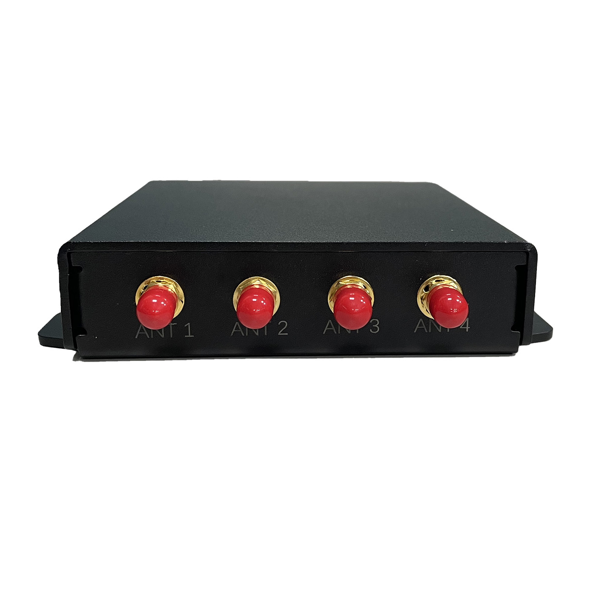
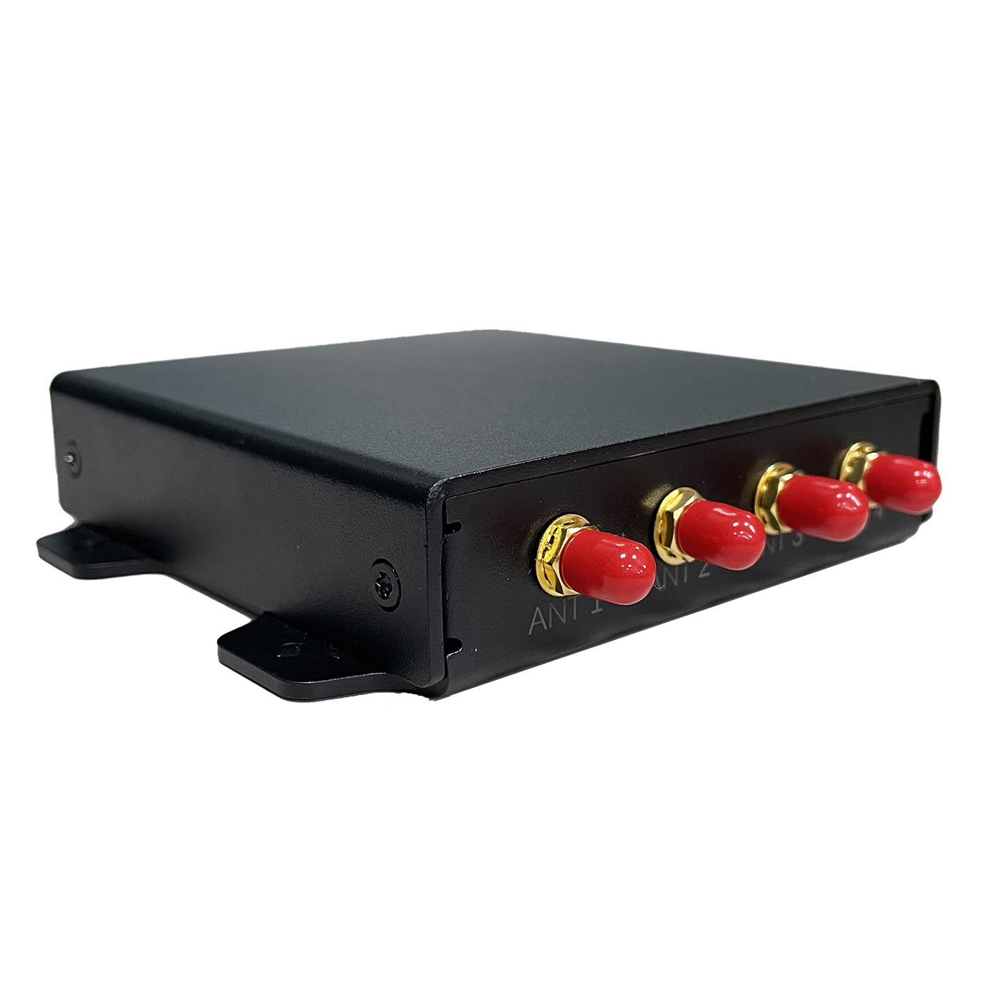
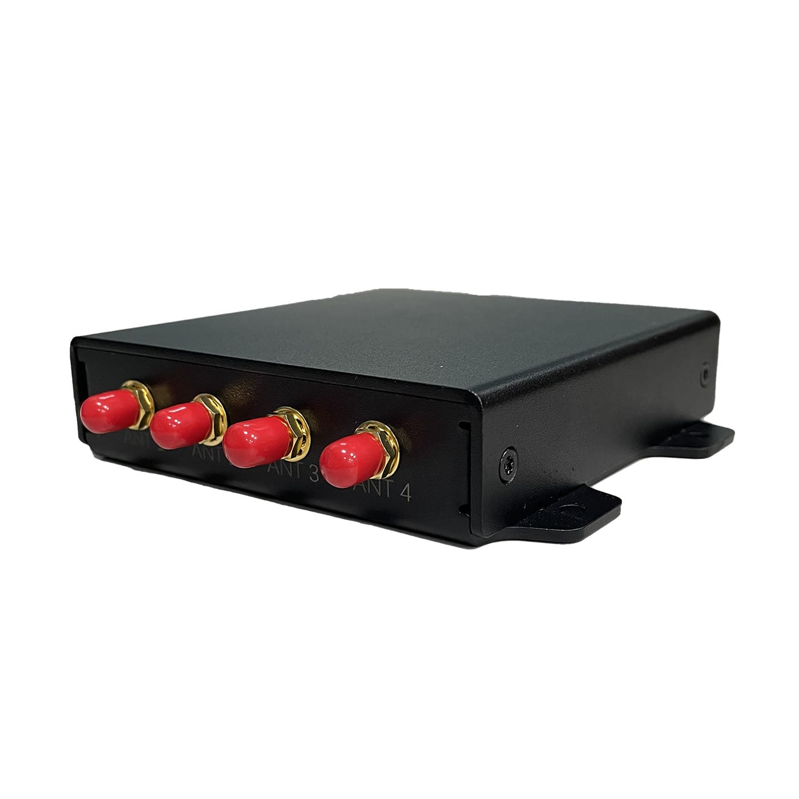
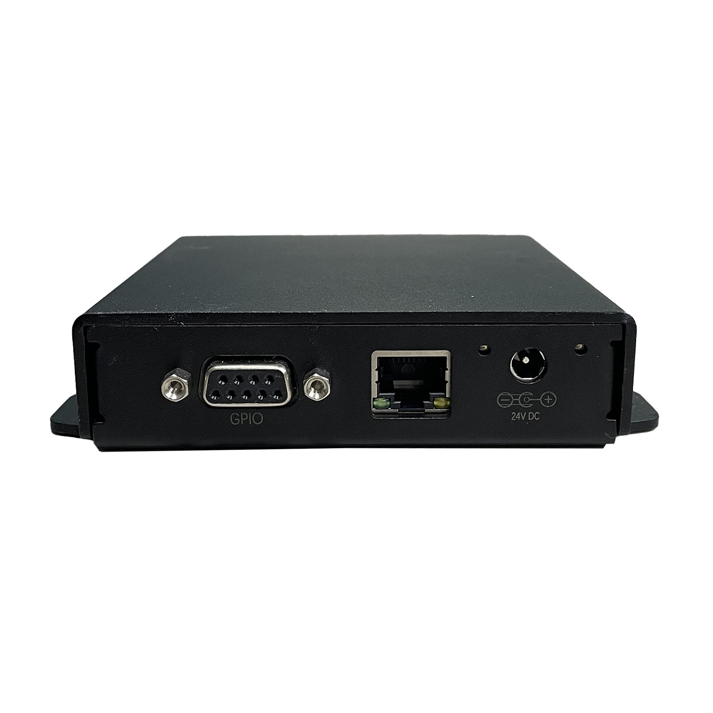
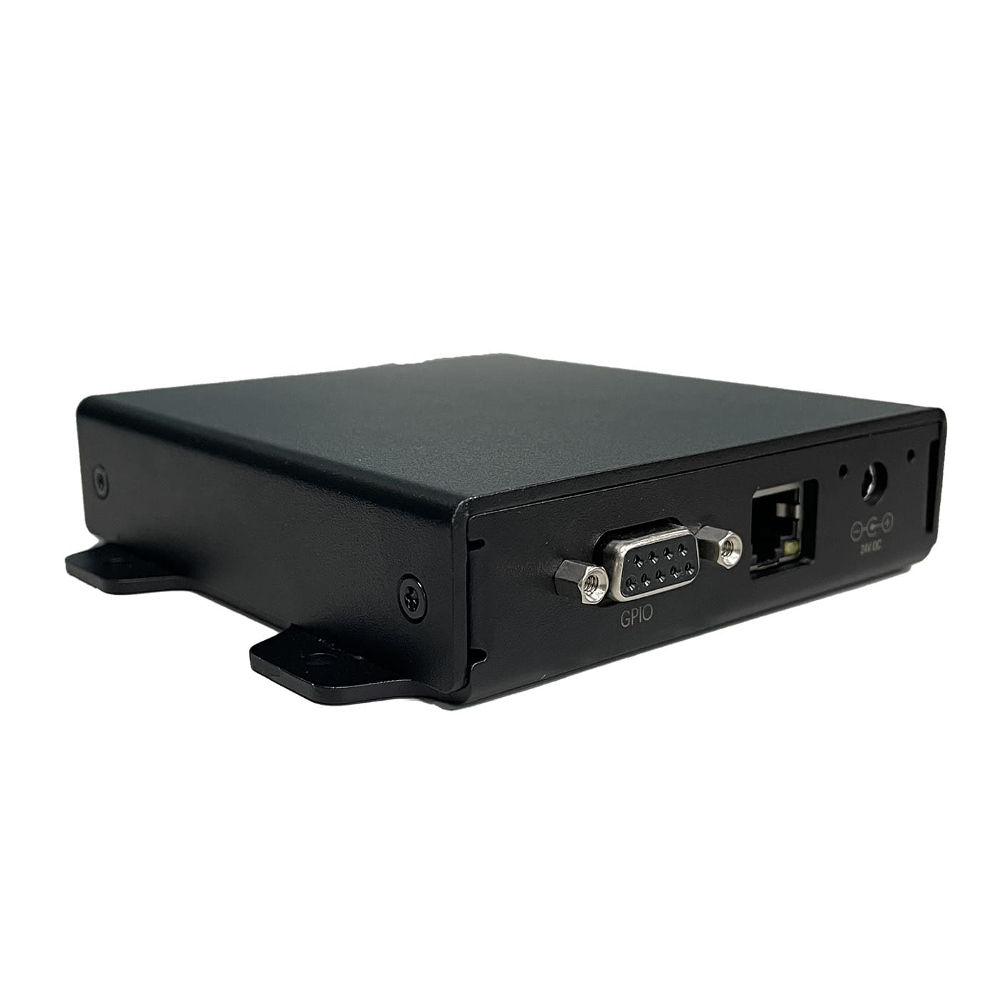
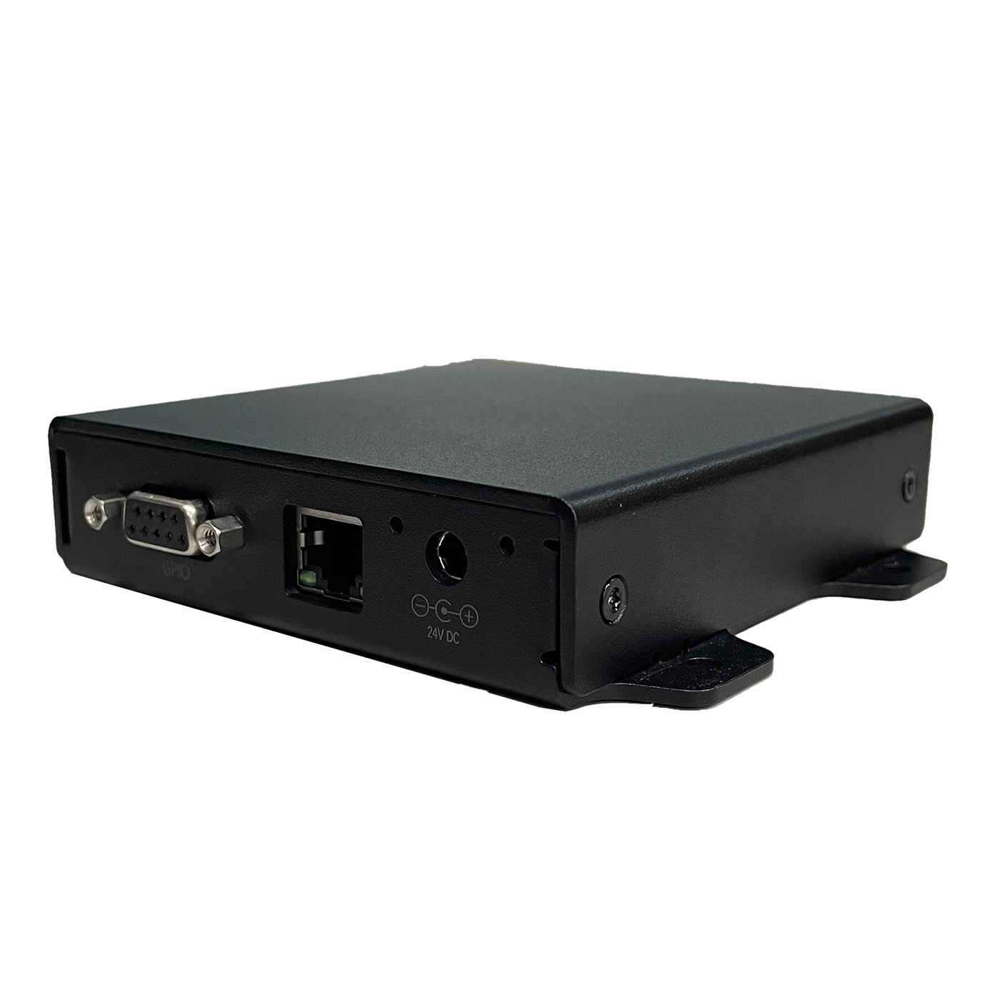
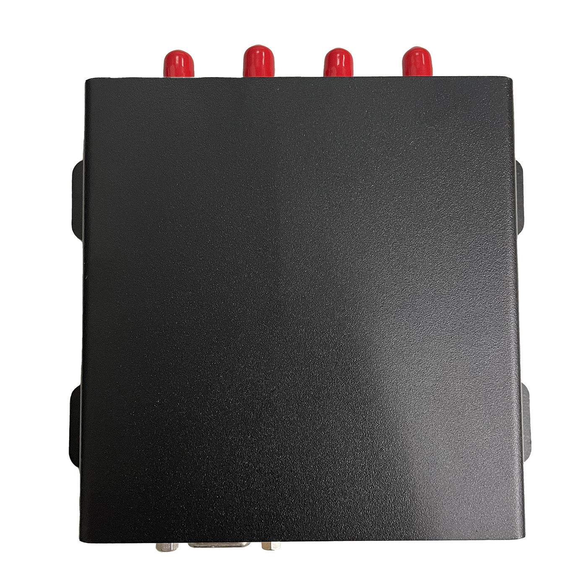
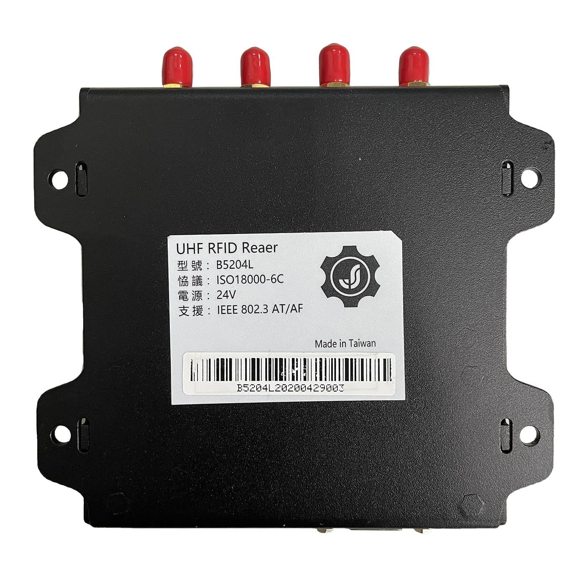
【JSUN】UHF RFID Reader-(B5204L)
超高频读写器(B5204L)
• 核心芯片采用 Impinj R2000 的超高频 RFID 读写晶片,具有优秀的读写能力。
• 提供乙太网界面以及多个标准输出、输入。
• 体积小巧,安装方便。
• 内置高速处理器,具有自我检测错误能力。
• 可以搭配 GPIO BOX 控制外部设备。
• 可被广泛应用于自动化生产线、分拣中心及其他简易读取的场合。
商品特色
介面说明
规格参数
商品特色
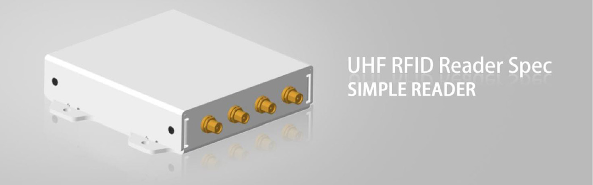
• 核心芯片采用 Impinj R2000 的超高频 RFID 读写晶片,具有优秀的读写能力。
• 提供乙太网界面以及多个标准输出、输入。
• 体积小巧,安装方便。
• 内置高速处理器,具有自我检测错误能力。
• 可以搭配 GPIO BOX 控制外部设备。
• 可被广泛应用于自动化生产线、分拣中心及其他简易读取的场合。
尺寸说明
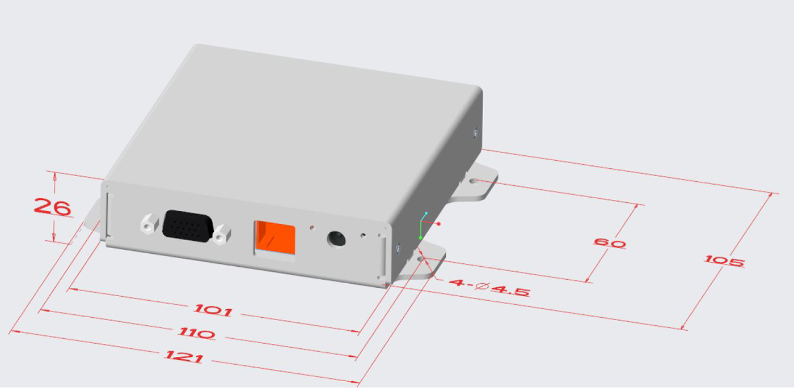
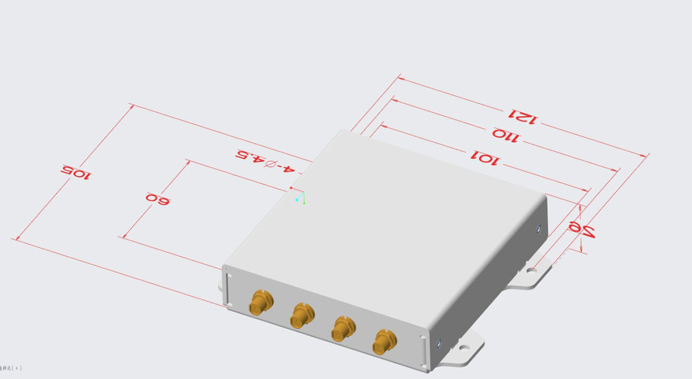
介面说明
脚位
定义
说明
Pin 1
GPO 0
驱动能力:20mA max
低电平:0 to 0.8V
高电平:2.4 to 3.3V
Pin 4
GPO 1
驱动能力:20mA max
低电平:0 to 0.8V
高电平:2.4 to 3.3V
Pin 5
GND
电源地
Pin 6
GPI 0(可配置为 GPO 2)
GPI,下波缘触发,低有效
低电平:0 to 0.8V
高电平:2.4 to 3.3V
Pin 7
GPI 1(可配置为 GPO 3)
GPI,下波缘触发,低有效
低电平:0 to 0.8V
高电平:2.4 to 3.3V
Pin 8
NC
NC
Pin 9
+5V
输出 5V/500mA
规格参数
读写晶片
可选配 Impinj IndyTM R2000
功能介面
RJ45
4 PIN GPIO,RSSET 键
RS232(Option)
天线数量
外接四天线,SMA(母头)
支援协定
ISO18000‐6C/ EPC Global C1G2
支持频段
NCC
FCC
CCC
发射功率
0dBm ~ +30dBm
接收灵敏度
-83dBm
调制方式
BSD_ASK/M0/40KHz;PR_ASK/M2/250KHz;
PR_ASK/M2/300KHz;BSD_ASK/M0/400KHz
调制解调器端口
通过PCMCIA（仅限于兼容C•CURE 800/8000的型号）
供电方式
直流电源, PoE
功耗
MAX:9W,待机:1.5W
输入电压
12~24 VDC@直流供电
工作温度
‐20°C~+50°C
储存温度
‐40°C~+70°C
工作湿度
10%~90%
软体 SDK
Microsoft .NET API、C/C++ API、Java API
物理尺寸
121(L)x 105(W)x 26(H)mm